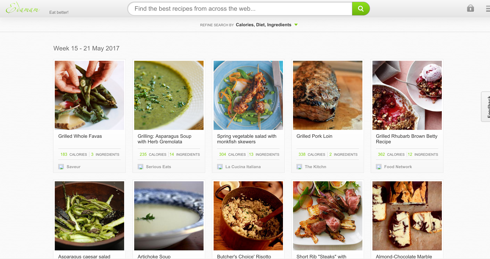
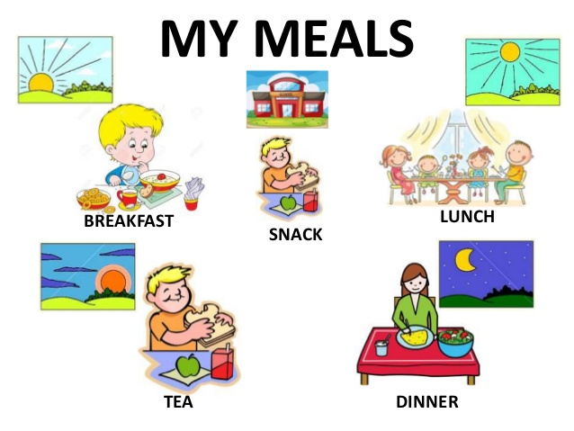

Varun Vig
Core Lab Interaction
API Applied
The API I picked was that from Edamam.com, which is a recipie website. My idea revolved around being able to get recipies based on the time of the day and hence forth a recommendation for a meal. For example if it was at 8am in the morning it would be a able to pull up different breakfast recipies for the user, likewise for lunch dinner and tea.
The problems I was facing during building up my API was how to link the time and and the vast spectrum of recipies to show up. I was able to get as far as code in the time of the day and the recipie separetly.
If the code on this page is inspected you can find that i was able to also bring in the recipie of a single item.